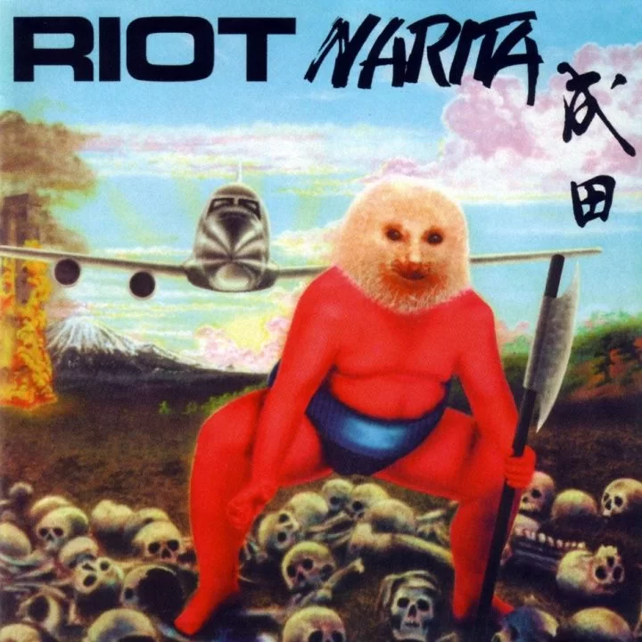

1
Faraon Love Shady - Duro 2 Horas
El dibujo parece hecho por un niño chiquito, aparte que royo con el nombre?2

Bad Bunny - Un Verano Sin Ti
Lo unico bueno que tiene es el meme de titi me pregunto xd3

RIOT - «Narita»
Me pregunto como alguien vio esto y dijo: "Si!, esta excelente asi sacalo"